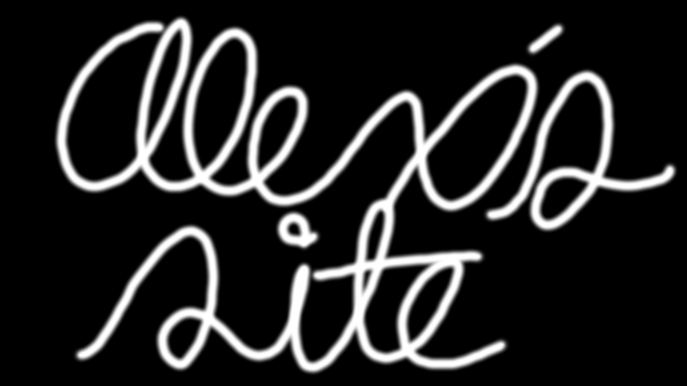

I'm On...
Dev Stuff
- 21C - an open source game of 21/blackjack that runs on any computer.
- DGEN For Panther - The DGEN Sega Genesis emulator for Mac OS X 10.3.9-10.5.8 PowerPC and Mac OS X 10.4-10.14 Intel.
- Dreamcast CDI Burner - allows you to burn any Sega Dreamcast .CDI file using Linux or Mac OS X.
- Half-Life For Tiger - Xash3d (Half-Life/GoldSrc open source engine) ported to Intel Mac OS X 10.4.x.
- Leopard_SDL2.0.6 - SDL version 2.0.6 modified to work on Mac OS X 10.5 Leopard.
- Panther_SDL2 - SDL version 2.0.3 modified to work on Mac OS X 10.3.9 Panther to Mac OS X 10.5.8 Leopard.
- MD5VS - a simple utility that allows you to verify via MD5 checksums the integrety of a given directery recursively, written in bash.
- Open95Keygen - open source Windows 95/NT 4.0 keygen that can generate random retail and OEM keys.
- Open95KeygenPSX - homebrew port of Open95Keygen to the Playstation 1 console.
- Parasite Eve Credits Disc Read Fail Glitch Fix - An example of modifying an existing PSX game.
- Portable Linux Executable Directory (PLED) - PLED makes a Linux executable run on any Linux distribution with the same architecture by creating a directory containing all linked shared libraries, the LD loader itself, and a wrapper which executes the real Linux executable with the included LD loader and shared libraries.
- PowerPC Media Center 7 - modified and updated YouTube-dl GUI For Mac OS X 10.3.9-10.5.8. Also does file conversions, burns/rips CDs, and more.
- PSNoobSDK Installer - builds the open source PSX PSNoobSDK and toolchain on Windows, Fedora, Debian, and Ubuntu with just one command.
- IOQuake3 For Panther - modified IOQuake3 engine for Mac OS X 10.3.9, 10.4.x, 10.5.x, and 10.6.x PowerPC.
- SM64EX Mac OS X Leopard Port - modified SM64EX port for PowerPC and Intel Macs running Leopard.
- Super Mario 64 EX Leopard Compiler - a simple point and click GUI app that makes a portable SM64EX.app on Mac OS X Leopard
- TOCPerfect - Modifies Playstation games to use the correct TOC and unlocks the CD drive after using a swap trick.
- TonyHax Boot CD - modified alternative to full blown TonyHax, make the CD Player Disc Swap Trick of early PSX consoles work with all games with the correct TOC.
- SuperMario64GameSharkWriter - allows you to write and patch GameShark codes to a USA SM64 ROM.
- WinXP_Python-3.6.15 - Python 3.6.15 for Windows XP SP3.